Sección 5 Implementación con R
A continuación, se muestran los procedimientos para realizar el análisis exploratorio utilizando datos de rendimiento de trigo (datosRinde.txt) con n=9810 observaciones que fueron recolectado con un monitor de rendimiento en un lote agrícola de 84 ha. La base de datos cuenta con tres columnas, las primeras dos identifican las coordenadas espaciales bidimensionales (x e y) y la tercera corresponde al rendimiento expresado en \(t\ ha^{-1}\).
Para cargar una base de datos puede utilizarse la función read.table(). Esta función permite abrir distintos tipos de archivos entre ellos aquellos de extensión .txt. El siguiente ejemplo crea un objeto llamado “datos” de clase data.frame cuya información es leída desde un archivo de texto (.txt). El argumento header=TRUE indica que la primera fila de los datos contiene los nombres de las columnas.
Para seguir la ilustraciión, cargar los paquetes específicos de R que albergan las funciones que se utilizarán para el análisis.
library(sp)
library(sf)
library(tmap)
#> Error : invalid version specification '1,5'
library(e1071)
library(spdep)
library(gstat)
library(caret)
library(geoR)
library(nlme)
library(ade4)Para visualizar las filas de un objeto, basta con escribir su nombre o, en el caso de objetos de clase data.frame es posible utilizar la función head(). En el panel de resultados, se despliega el contenido del objeto.
head(datos)
#> x y Rinde
#> 1 -59,1 -37,9 0,348
#> 2 -59,1 -37,9 0,360
#> 3 -59,1 -37,9 0,367
#> 4 -59,1 -37,9 0,001
#> 5 -59,1 -37,9 0,382
#> 6 -59,1 -37,9 0,4095.1 Conversión de coordenadas espaciales
Dado que la función utilizada para la generación del objeto datos no es específica para datos espaciales, es necesario transformar este objeto. Esta transformación permite correr funciones estadísticas que solo trabajan sobre objetos de datos espaciales (clase SpatialPointsDataFrame o sf). Para ello puede utilizarse funciones de los paquetes sp o sf.
La función coordinates() del paquete sp transforma el data.frame en un objeto de datos espaciales e indica al software que las columnas “x” e “y” son coordenadas espaciales. A continuación, se genera un nuevo objeto espacial denominado datos_sp que contiene esta información.
Luego de indicar las columnas que pertenecen a la información de las coordenadas, es necesario especificar el sistema de referencia. La función CRS(), Coordinate Reference System, tiene una variedad de argumentos que permiten hacer referencia a diferentes sistemas de proyecciones y asociar esta información al objeto con el que se está trabajando. La proyección longlat es utilizada en esta aplicación. Esta proyección solo admite valores de longitud mayores a -180 y menores a 180 y valores de latitudes que se encuentren entre -90 y 90. El datum especificado será WGS84.
Una alternativa para hacer referencia a un sistema de coordenadas particular es utilizar su código EPSG. La EPSG es una organización científica vinculada a la industria del petróleo europea (http://www.epsg-registry.org/) la cual desarrolló un repositorio que contiene información sobre sistemas de referencia, proyecciones cartográficas y elipsoides de todo el mundo. La función make_EPSG() del paquete rgdal permite visualizar todos ellos. Para realizar este procedimiento sólo se modifican los argumentos de la función CRS. En este caso el código EPSG para la proyección longlat es 4326.
La función spTransform() permite convertir las coordenadas. Cuando se realiza la transformación del sistema de proyección geográfico a cartesiano, es necesario indicar a cuál zona o faja pertenecen los datos bajo análisis, para este caso la zona es 21. Al igual que en la sentencia anterior, se debe indicar el datum y elipsoide que en ambos casos corresponde a WGS84.
Esta transformación también puede realizarse en base al código EPSG en este caso para el sistema de coordenadas UTM faja 21 sur el código es 32721.
Otra opción para generar este tipo de datos espaciales es utilizando el paquete sf. Para ello se usan las funciones st_as_sf() la cual convierte el data.frame en un objeto sf y se le asigna el sistema de coordenadas de referencia, utilizando el argumento crs = 4326. La función st_transform() transforma el sistema de coordenadas.
datos_sf <- st_as_sf(datos,
coords = c("x", "y"),
crs = 4326)
st_crs(datos_sf) <- 4326
datos_sf <- st_transform(datos_sf, crs = 32721)Si se visualizan las primeras filas del objeto, se puede observar, entre otras cosas, la clase de objeto (sf), su geometría (puntos) y la información referida a su sistema de coordenadas.
head(datos)
#> x y Rinde
#> 1 -59,1 -37,9 0,348
#> 2 -59,1 -37,9 0,360
#> 3 -59,1 -37,9 0,367
#> 4 -59,1 -37,9 0,001
#> 5 -59,1 -37,9 0,382
#> 6 -59,1 -37,9 0,409Esta transformación también puede realizarse en base al código EPSG en este caso para el sistema de coordenadas UTM faja 21 sur el código es 32721.
Otra opción para generar este tipo de datos espaciales es utilizando el paquete sf. Para ello se usan las funciones st_as_sf() (convierte el data.frame en un objeto de clase sf), st_crs() (asigna el sistema de coordenadas de referencia) y st_transform() (transforma el sistema de coordenadas).
datos_sf <- st_as_sf(datos, coords=c("x","y"),
crs=4326)
datos_sf <- st_transform(datos_sf, crs=32721)Si se visualizan las primeras filas del objeto, se puede observar entre otras cosas la clase de objeto (sf), su geometría (puntos) y la información referida a su sistema de coordenadas.
head(datos_sf)
#> Simple feature collection with 6 features
and 1 field
#> geometry type: POINT
#> dimension: XY
#> bbox: xmin: 312000 ymin: 5800000 xmax:
313000 ymax: 5800000
#> epsg (SRID): 32721
#> proj4string:
+ proj=utm
+ zone=21
+ south
+datum=WGS84 +units=m +no_defs
#> First 3 features:
#> Rinde geometry
#> 1 0,348 POINT (313088 5800921)
#> 2 0,360 POINT (311983 5800811)
#> 3 0,367 POINT (312933 5800910)La visualización de la información georreferenciada permite un rápido diagnóstico de la distribución de los datos y de los valores observados. Trabajando con datos de clase sf es posible realizar una rápida visualización de los datos espaciales. El paquete tmap permite realizar mapas temáticos. Para comenzar a realizar un mapa debe especificarse los datos con los que se desea trabajar mediante la función tm_shape() y luego se suman elementos creados con funciones de este paquete utilizando el símbolo +.
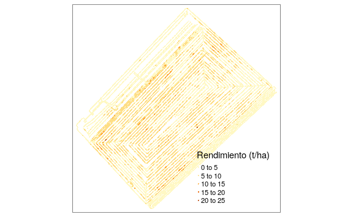
5.2 Eliminación de outliers e inliers
En un data.frame, una forma sencilla para obtener medidas resumen de una variable es con la función summary(). Se utiliza $ para hacer referencia a una columna particular dentro de un objeto.
Las funciones hist() y boxplot() realizan gráficos de histogramas y box-plots, respectivamente. Sus múltiples argumentos permiten la edición de cada gráfico. La función par() permite dividir la ventana gráfica de R, en el siguiente ejemplo se divide la ventana gráfica de R en dos columnas y una fila.
par(mfrow = c(1, 2))
hist(
datos_sf$Rinde,
col = 'grey',
nclass = 20,
main = "Histograma",
ylab = 'Frecuencia Relativa',
xlab = 'Rendimiento (t/ha)'
)
boxplot(
datos$Rinde,
col = 'grey',
ylab = 'Rendimiento (t/ha)',
main = "Box-Plot",
ylim = c(0, 14)
)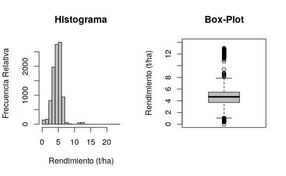
a función skewness() del paquete e1071 permite calcular el coeficiente de asimetría. Existen 3 fórmulas para su cálculo (por defecto usa el tipo 3). Para más información, se puede utilizar help(skewness).
En el histograma se observa asimetría derecha en la distribución de los datos. La asimetría también puede advertirse con los estadísticos con el coeficiente de asimetría el cual es de 1,45. En el gráfico box-plot se observan valores extremos de la variable que se encuentran principalmente por encima de la media \(+\) 3 SD.
Las siguientes instrucciones calculan y crean objetos para la media, el DE y los límites superior (\(media + 3DE\)) e inferior (\(media - 3DE\)) con los que pueden detectarse los outliers y elimina estos valores.
Los símbolos | y & son operadores lógicos que significan or y and, respectivamente. Las siguientes instrucciones generan dos objetos. El objeto datos_1 es la base depurada, es decir sin outliers, mientras que el objeto outliers presenta los datos que han sido eliminados en esta etapa.
datos_1 <-
subset(datos_sf,
datos_sf$Rinde < LS &
datos_sf$Rinde > LI)
outliers <-
subset(datos_sf,
datos_sf$Rinde > LS |
datos_sf$Rinde < LI)Para ver el impacto de la eliminación de outliers pueden obtenerse nuevamente las medidas resumen, coeficiente de asimetría, histograma y box-plot.
summary(datos_1$Rinde)
#> Min. 1st Qu. Median Mean 3rd Qu. Max.
#> 0,35 3,69 4,66 4,52 5,45 8,73
skewness(datos_1$Rinde)
#> [1] -0,536par(mfrow = c(1, 2))
hist(
datos_1$Rinde,
col = 'grey',
nclass = 20,
main = "Histograma",
ylab = 'Frecuencia Relativa',
xlab = 'Rinde (t/ha)'
)
boxplot(
datos_1$Rinde,
col = 'grey',
ylab = 'Rinde (t/ha)',
main = "Box-Plot",
ylim = c(0, 14)
)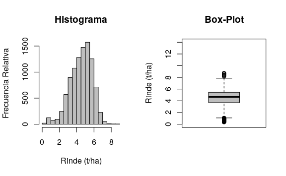
Las medidas resumen muestran un cambio principalmente a nivel de los valores máximos, pasando de 24 a 8,734 \(t\ ha^{-1}\). El coeficiente de asimetría presenta un valor de -0,54 que se aproxima a valores recomendados para el análisis geoestadístico (-1 a 1). En la figura anterior se presenta el histograma y box-plot luego de la eliminación de los outliers. Para la variable en análisis, se eliminaron durante la depuración 120 casos que representan un 1,2% del total de sitios (n=9810) con mediciones. Puede observarse una mejora en la simetría de la distribución de la variable y una marcada disminución de valores extremos.
La identificación y eliminación de inliers requiere de la creación de una matriz de ponderación espacial. La función dnearneigh() se utiliza para identificar el vecindario de cada sitio. Para ello es necesario calcular la distancia espacial entre los puntos para lo cual se usa la sintaxis $geom que permite acceder a las coordenadas del objeto datos. En este ejemplo, se consideran datos vecinos a aquellos que se encuentran a una distancia Euclídea de 0 a 15 m. La función nb2listw() transforma el objeto vecindarios que contiene las distancias a una matriz de pesos estandarizados por filas (style = "W"). Este objeto es denominado pesos_sp. Para generar la matriz de pesos espaciales es necesario que todos los puntos tengan al menos un vecino, caso contario la función nb2listw() genera un error advirtiendo este hecho. Para superar el inconveniente es posible probar con distancias mayores hasta lograr que todos los puntos tengan al menos un vecino. Hay que tener la precaución de no generar un excesivo solapamiento entre los vecindarios. Otra opción es incorporar el argumento zero.policy=T dentro de la función nb2listw() que permite generar la matriz de pesos espaciales con observaciones que no presentan dato/s vecino/s. El mismo argumento debe agregarse luego cuando se calcula el índice de Moran local o gráfico de Moran (funciones localmoran() y moran.plot(), respectivamente). Las frecuencias del número de puntos vecinos para cada observación puede obtenerse mediante la función summary() del objeto vecindarios. En el ejemplo se observa que 3113 puntos tienen vecindarios conformados con 4 datos. Mientras que sólo un dato presenta 18 observaciones consideradas como vecinas.
vecindarios <- dnearneigh(datos_1$geom,
d1 = 0, d2 = 15)
summary(vecindarios)
#> Neighbour list object:
#> Number of regions: 9690
#> Number of nonzero links: 62578
#> Percentage nonzero weights: 0,0666
#> Average number of links: 6,46
#> Link number distribution:
#>
#> 1 2 3 4 5 6 7 8 9 10 11 12 13 14 15 16 17
#> 5 83 302 3113 1292 999 893 870 393 457 547
473 171 43 31 13 4
#> 18
#> 1
#> 5 least connected regions:
#> 3033 7885 9153 9598 9681 with 1 link
#> 1 most connected region:
#> 869 with 18 linksLa función localmoran() calcula el índice local de Moran que permite identificar potenciales outliers espaciales. También permite el ajuste de los valores-p por el criterio de Bonferroni. La información referida al valor del índice local de Moran de cada punto se encuentra en la columna Ii mientras que su significancia estadística en la columna Pr(z < 0).
moranl <-
localmoran(datos_1$Rinde,
pesos_sp,
p.adjust.method = "bonferroni",
alternative = "less")
head(moranl)
#> Ii E.Ii Var.Ii Z.Ii Pr(z < 0)
#> 1 5,32 -0,000103 0,0832 18,44 1
#> 2 6,83 -0,000103 0,1110 20,49 1
#> 3 5,83 -0,000103 0,0832 20,21 1
#> 4 3,36 -0,000103 0,1665 8,24 1
#> 5 3,91 -0,000103 0,1427 10,35 1
#> 6 4,21 -0,000103 0,0999 13,31 1El gráfico de Moran permite la identificación de puntos influyentes. La función moran.plot() construye el gráfico y devuelve los estadísticos de diagnóstico para cada punto. En el eje horizontal se expresan los valores de la variable rendimiento mientras que en el vertical se representa el retardo espacial de la variable. Adicionalmente, se ajusta y añade a este diagrama modelos de regresión lineal y estadísticos de influencia para identificar sitios con datos raros. Un punto se determina como influyente si al menos uno de los estadísticos así lo considera. En la figura siguiente los puntos negros con forma romboidal fueron identificados como influyentes y se los considera como inliers.
moranp <-
moran.plot(
datos_1$Rinde,
col = 3,
pesos_sp,
labels = F,
quiet = T,
xlab = "Rinde",
ylab = "Rinde Spatially Lagged"
)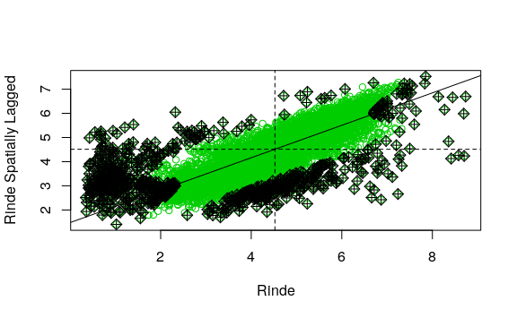
Para visualizar en una tabla los puntos potencialmente influyentes y sus estadísticos de diagnóstico puede imprimir el objeto moranp. Datos con * en la columna inf se los considera como influyente y por lo tanto posible outlier espacial.
Desde el objeto moranp puede extraerse una matriz de valores lógicos (verdadero/falso) para los estadísticos diagnóstico que identifican un punto como influyente o no.
influ <- moranp$is.inf
head(influ)
#> dfb.1_ dfb.x dffit cov.r cook.d hat
#> 1 FALSE FALSE TRUE TRUE FALSE TRUE
#> 2 FALSE FALSE FALSE TRUE FALSE TRUE
#> [ reached getOption("max.print") -- omitted
4 rows ]En la siguiente sentencia se adiciona al objeto datos_1 los valores de los objetos moranl e influ, que tienen información para detectar los outliers espaciales detectados con el índice de Moran local y gráfico de Moran, respectivamente.
Posteriormente procedemos a eliminar los datos con Índice de Moran Local negativo y estadísticamente significativos (p<0,05). La función subset() selecciona datos que cumplen con cierta condición lógica. El operador lógico or que indica que extraiga los datos que cumplen con alguna de las dos condiciones. El nuevo objeto es denominado datos_2. Además, se crea un nuevo objeto que tendrá los datos que han sido eliminados en este proceso (inliers_ml).
datos_2 <-
subset(datos_1,
datos_1[["Ii"]] >= 0 |
datos_1[["Pr.z...0."]] > 0.05)
inliers_ml <-
subset(datos_1,
datos_1[["Ii"]] < 0 &
datos_1[["Pr.z...0."]] < 0.05)Existen varias formas de eliminar las filas de la tabla que fueron identificadas como inliers con la función moran.plot(). Una alternativa es usando sentencias lógicas con los operadores == y & que significan igualdad lógica y and respectivamente. Como en el caso anterior se genera una nueva base (datos_3) la cual no tendrá los datos considerados como outliers y outliers espaciales. También se genera una nueva base que tendrá solo los datos considerados aquí como outliers espaciales (inliers_mp).
datos_3 <-
datos_2[datos_2$dfb.1_ == FALSE &
datos_2$dfb.x == FALSE &
datos_2$dffit == FALSE &
datos_2$cov.r == FALSE &
datos_2$cook.d == FALSE &
datos_2$hat == FALSE, ]La sentencia anterior instruye al software para que cree un objeto llamado datos_3 a partir de las filas del objeto datos_2 cuyas columnas dfb.1, dfb.x, dffit, cov.r, cook.d y hat son simultáneamente iguales a FALSE.
inliers_mp <-
datos_2[datos_2$dfb.1_ != FALSE |
datos_2$dfb.x != FALSE |
datos_2$dffit != FALSE |
datos_2$cov.r != FALSE |
datos_2$cook.d != FALSE |
datos_2$hat != FALSE, ]Luego de identificar y eliminar los inliers detectados con el índice de Moran y posteriormente con el gráfico de Moran, la nueva base de datos presenta 9009 casos, es decir, se eliminaron 681 casos (7% de los datos) respecto a la base sin outliers.
Los estadísticos descriptivos de los datos depurados muestran una mejora en el coeficiente de asimetría (-0,19) lo cual se refleja en el histograma y box-plot. Este último también muestra la ausencia de valores extremos.
summary(datos_3$Rinde)
#> Min. 1st Qu. Median Mean 3rd Qu. Max.
#> 1,73 3,81 4,72 4,63 5,46 7,32
skewness(datos_3$Rinde)
#> [1] -0,197par(mfrow = c(1, 2))
hist(
datos_3$Rinde,
col = 'grey',
nclass = 20,
main = "Histograma",
ylab = 'Frecuencia Relativa',
xlab = 'Rendimiento (t/ha)'
)
boxplot(
datos_3$Rinde,
col = 'grey',
ylab = 'Rendimiento (t/ha)',
main = "Box-Plot",
ylim = c(0, 14)
)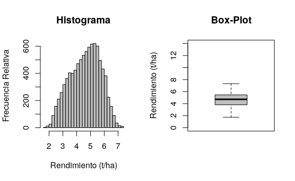
Las siguientes líneas muestran la visualización conjunta de los datos originales y aquellos detectados como outliers y outliers espaciales. En este último se diferencian los detectados por el índice de Moran local (Inliers ML) respecto a los identificados por el gráfico de Moran (Inliers MP).
tmap_mode("plot")
#> tmap mode set to plotting
tm_shape(datos_3) +
tm_dots("Rinde", title="Rendimiento (t/ha)") +
tm_shape(outliers) +
tm_dots(col = "red", size = 0.1) +
tm_shape(inliers_ml) +
tm_dots(col = "blue", size = 0.1) +
tm_shape(inliers_mp) +
tm_dots("cyan", size = 0.1) +
tm_add_legend("symbol",
col = c("red", "blue", "cyan"),
labels = c("Outliers",
"Inliers ML",
"Inliers MP"))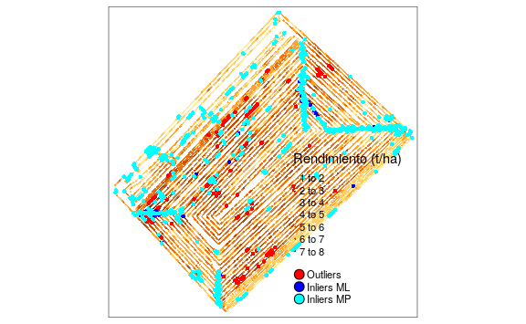
Finalmente las líneas siguientes permiten la exportación de los datos depurados en diferentes formatos (.csv, .shp, .gpkg). para ello se utiliza la función st_write(). Previo a ello se selecciona solo la variable Rinde del objeto datos_3.
5.3 Detección de tendencias espaciales
Para evaluar las tendencia de la media del rendimiento con las coordenadas geográficas primero se incorpora al data.frame del objeto sf las coordenadas. De esta forma el objeto datos_3 presenta la variable Rinde, su geometría y las coordenadas x e y.
datos_3$x <- st_coordinates(datos_3)[,1]
datos_3$y <- st_coordinates(datos_3)[,2]
head(datos_3)
#> Simple feature collection with 6 features
and 3 fields
#> geometry type: POINT
#> dimension: XY
#> bbox: xmin: 312000 ymin: 5800000 xmax:
313000 ymax: 5800000
#> epsg (SRID): 32721
#> proj4string:
+ proj=utm
+ zone=21
+ south
+datum=WGS84 +units=m +no_defs
#> First 3 features:
#> Rinde geometry x y
#> 256 1,73 POINT (311987 5800811) 311987
5800811
#> 257 1,73 POINT (313167 5800905) 313167
5800905
#> 263 1,78 POINT (312511 5800721) 312511
5800721Para visualizar tendencias espaciales graficamos la variable en estudio en función de las coordenadas. Si se desea desplegar los gráficos para la coordenada x e y en una misma ventana gráfica, se puede particionar la ventana en una fila y dos columnas utilizando la siguiente función:
La función plot() permite realizar gráficos de dispersión. Además, puede adicionarse una línea de suavizado lowess con la función lines(). Esta última, realiza el ajuste sobre una ventana gráfica preexistente.
par(mfrow = c(1, 2))
with(datos_3, {
plot(Rinde ~ x)
lines(lowess(Rinde ~ x),
col = "red", lwd = 3)
})
with(datos_3, {
plot(Rinde ~ y)
lines(lowess(Rinde ~ y),
col = "red", lwd = 3)
})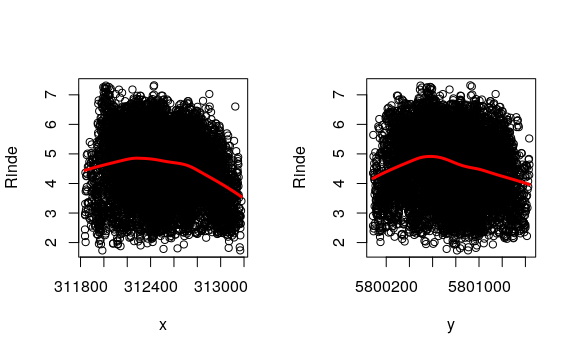
Mediante un modelo lineal de regresión, puede ajustarse la tendencia entre la variable en estudio y las coordenadas. Si la tendencia lineal resulta significativa, debería descontarse trabajando con los residuos del modelo, que se obtienen con la función residuals().
La siguiente línea despliega una tabla resumen del modelo:
summary(regresion)
#>
#> Call:
#> lm(formula = Rinde ~ 1 + x + y, data =
datos_3, na.action = na.omit)
#>
#> Residuals:
#> Min 1Q Median 3Q Max
#> -3,165 -0,811 0,102 0,819 2,736
#>
#> Coefficients:
#> Estimate Std. Error t value Pr(>|t|)
#> (Intercept) 1,84e+03 2,34e+02 7,85 4,6e-15
***
#> x -5,56e-04 4,10e-05 -13,54 < 2e-16 ***
#> y -2,86e-04 4,10e-05 -6,98 3,2e-12 ***
#> ---
#> Signif. codes: 0 '***'
0,001 '**'
0,01 '*'
0,05 '.'
0,1 '
'
1
#>
#> Residual standard error: 1,07 on 9006
degrees of freedom
#> Multiple R-squared: 0,0348, Adjusted
R-squared: 0,0346
#> F-statistic: 162 on 2 and 9006 DF, p-value:
<2e-16En este caso, los gráficos exploratorios no marcan una tendencia marcada con las coordenadas. Aún, cuando los valores-p del modelo de regresión son significativos (p<0,05), se decidió trabajar con la variable original debido a que el coeficiente de determinación del modelo acusa un ajuste pobre (0,035).
5.4 Cálculo del índice de Moran
Para la conformación de la matriz de ponderadores espaciales se definieron los vecindarios de cada sitio mediante una red de conexión construida en base a la distancia euclídea. Se consideraron sitios vecinos a aquellos contiguos ubicados hasta 15 m de distancia. El procedimiento es similar al empleado para el cálculo de índice de Moran local. En este caso se agrega el argumento zero.policy=T dentro de la función nb2listw() y moran.mc(). Esto permite que se genera la matriz de pesos espaciales sin la restricción de que todos los puntos tengan al menos un dato vecino.
vecindarios <- dnearneigh(datos_3$geom,
0, 15)
pesos_sp <- nb2listw(vecindarios,
style = "W",
zero.policy = TRUE)Para realizar el cálculo del Índice de Moran y determinar su significancia estadística mediante simulación Monte Carlo, se utiliza moran.mc(). Se debe especificar la variable en estudio, la lista con los pesos de las ponderaciones espaciales y el número de simulaciones.
i.moran <-
moran.mc(
datos_3$Rinde,
listw = pesos_sp,
nsim = 999,
zero.policy = T
)
i.moran
#>
#> Monte-Carlo simulation of Moran I
#>
#> data: datos_3$Rinde
#> weights: pesos_sp
#> number of simulations + 1: 1000
#>
#> statistic = 0,8, observed rank = 1000,
p-value = 0,001
#> alternative hypothesis: greaterEstos resultados permiten concluir que existe autocorrelación espacial positiva (0,78196) y que esta es estadísticamente significativa (p=0,001).
5.5 Análisis basado en semivariogramas
Las semivariogramas empíricos pueden obtenerse usando la función variogram() del paquete gstat. Esta tiene múltiples argumentos, entre ellos una fórmula, un objeto de datos espaciales y la distancia hasta la cual los pares de puntos son incluidos en la estimación de semivarianza (cutoff). Dado que el objeto a tratar (datos_3) es de clase sf, no es necesario realizar su transformación a un objeto del tipo espacial. Utilizando la función plot() se visualiza el semivariograma empírico ajustado.
semiv_emp <- variogram(Rinde ~ 1,
datos_3,
cutoff = 400)
head(semiv_emp)
#> np dist gamma dir.hor dir.ver id
#> 1 97403 18,0 0,412 0 0 var1
#> 2 281953 41,4 0,643 0 0 var1
#> [ reached 'max'
/ getOption("max.print") --
omitted 4 rows ]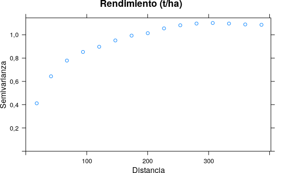
En el caso anterior la fórmula utilizada (Rinde~1) asume que el proceso es estacionario. Si se requiere adicionar una tendencia sea reemplaza el caracter 1 por el nombre de la covariable. Por ejemplo, si existe una tendencia dada por las coordenadas la fórmula se escribe como Rinde~x+y. Es posible solo colocar una de las coordenadas o incluir también términos polinómicos para las mismas. También se pueden usar otras covariables distintas a las coordenadas.
Por defecto para el cálculo del semivariograma empírico la función variogram() utiliza el estimador de los momentos de Matheron. Para emplear el estimador robusto de Cressie-Hawkins se adiciona en la función el argumento cresice=TRUE. Por defecto la función emplea para el cálculo del semivariograma un tercio de la diagonal del “cuadro” que contiene las observaciones. Con el argumento cutoff se puede cambiar esta distancia. El argumento width permite cambiar el ancho de los intervalos de distancia en los que se agrupan los pares de puntos de datos para las estimaciones de semivarianza. Por defecto se calcula como cutoff/15. El argumento alpha permite el cálculo de los semivariogramas en distintas direcciones en el plano (x, y), tomando valores en grados positivos en sentido horario desde y (Norte). Para alpha = 0 la dirección es Norte y para alpha = 90 la dirección es Este. Esto es útil para evaluar la presencia de anisotropía. Usualmente se suelen calcular los semivariogramas direccionales para \(45^\circ\), \(90^\circ\), \(135^\circ\) y \(180^\circ\). Otras opciones pueden encontrarse mediante la función help().
A continuación se ajusta un modelo de semivariograma teórico sobre el semivariograma empírico usando las funciones fit.variogram() yvgm(). Esta última ajusta el modelo teórico, sus argumentos indican el tipo de modelo a ajustar y los parámetros de ajuste (partial sill, rango y efecto nugget). Estos parámetros iniciales son de referencia y pueden obtenerse a partir del semivariograma empírico. Cambiar los parámetros modifica la suma de cuadrados del error (SCE).
Se ajusta un modelo esférico, con valores 0,6, 200 y 0,2 como parámetros iniciales para estimar el sill parcial, rango y nugget, respectivamente. La salida del software R muestra los parámetros del semivariograma teórico ajustado: nugget (\(C_0=0.31\)), sill parcial (\(C=0.72\)) y rango (154 m). Nota: bajo la columna psill, para la fila Nug, se debe leer el valor \(C_0\).
mod_esf <- fit.variogram(
semiv_emp,
vgm(0.6, "Sph", 200, 0.2))
mod_esf
#> model psill range
#> 1 Nug 0,309 0
#> 2 Sph 0,719 154El semivariograma empírico (puntos) y teórico ajustado(linea), para un modelo esférico, puede graficarse de la siguiente manera:
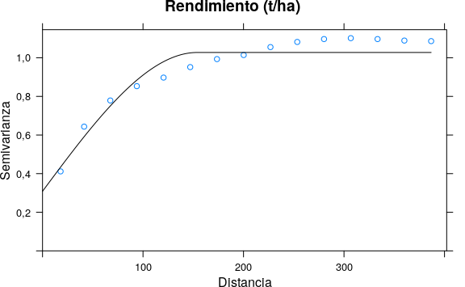
El modelo que mejor ajusta será el de menor SCE. La función attr() devuelve atributos de un objeto y puede usarse para consultar la SCE del modelo ajustado.
Repitiendo el procedimiento para un modelo exponencial (especificado en la función vgm()) se obtiene un menor SCE indicando mejor ajuste. Abajo se presenta la salida del software R que contiene los parámetros del semivariograma teórico ajustado: nugget (\(C_0=0.21\)), sill parcial (\(C=0.86\)) y rango (64,88 m) o Rango Practico (\(Rp=64.88 m \times 3\)). Nota: bajo la columna “psill”, para la fila Nugget, se debe leer el valor \(C_0\).
mod_exp <- fit.variogram(
semiv_emp,
vgm(0.6, "Exp", 200, 0.2))
mod_exp
#> model psill range
#> 1 Nug 0,212 0,0
#> 2 Exp 0,860 64,9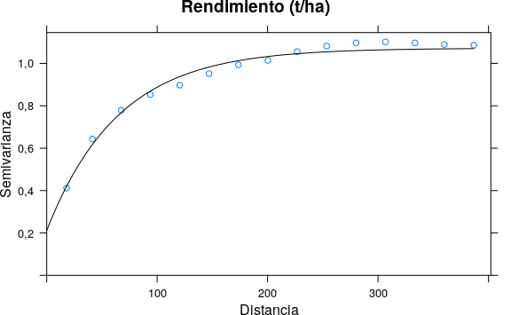
Las siguientes líneas permiten la visualización conjunta de los dos ajustes realizados.
vgLine <- rbind(
cbind(
variogramLine(
mod_exp, maxdist = max(semiv_emp$dist)),
id = "Exponencial"),
cbind(
variogramLine(
mod_esf, maxdist = max(semiv_emp$dist)),
id = "Esférico")
)
ggplot(semiv_emp, aes(x = dist, y = gamma,
color = id)) +
geom_line(data = vgLine) +
geom_point() +
labs(
title = "Semivariograma experimental
y teórico ajustado") +
xlab("Distancia") +
ylab("Semivarianza") +
scale_color_discrete(
name = "Modelo",
labels = c("Esférico",
"Exponencial",
"Experimental"))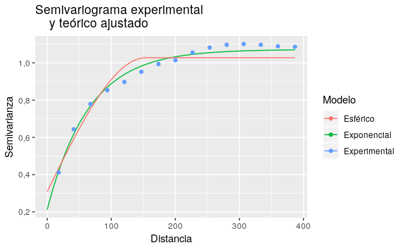
Algunas alternativas para aplicar las funciones de ajuste de los semivariogramas teóricos incluyen opciones de ajuste automático donde el usuario sólo especifica los modelos a ajustar sin tener que dar valores iniciales de los parámetros del semivariograma. La función estima valores iniciales razonables y selecciona aquel modelo de mejor bondad de ajuste en función a la SCE. A continuación, se presenta este ejemplo ajustando los modelos exponencial y esférico. Como era de esperar, el modelo de mejor ajuste fue el esférico.
modelos <- fit.variogram(semiv_emp,
vgm(c("Exp", "Sph")))
modelos
#> model psill range
#> 1 Nug 0,212 0,0
#> 2 Exp 0,860 64,9Si bien, como se mostró en el análisis exploratorio de los datos no se evidencia una tendencia en la variable rendimiento con las coordenadas, en las siguientes líneas se ilustra cómo se realiza el ajuste del semivariograma empírico con tendencia dada por las coordenadas (x e y) y el posterior ajuste del modelo teórico. Los resultados muestran que no se observan diferencias importantes en los parámetros estimados del semivariograma teórico. En casos donde la tendencia es importante su efecto se puede reflejar en el ajuste del semivariograma empírico el cual suele mostrar un incremento de la semivarianza a medida que aumenta la distancia que no alcanza a estabilizarse dentro del dominio bajo estudio.
semiv_emp_t <- variogram(Rinde ~ x + y,
datos_3, cutoff = 400)
modelos_t <- fit.variogram(semiv_emp_t,
vgm(c("Exp", "Sph")))
modelos_t
#> model psill range
#> 1 Nug 0,208 0,0
#> 2 Exp 0,859 63,8
attr(modelos_t, 'SSErr')
#> [1] 0,345
plot(semiv_emp_t , modelos_t)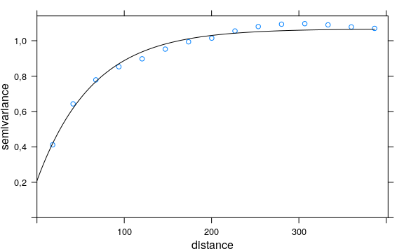
5.5.1 Mapeo de la variabilidad espacial
Para el mapeo de la variabilidad espacial se confeccionará una grilla de predicción donde se realiza el kriging. Las dimensiones de la grilla se establecerá mediante un polígono de los límites del lote. El archivo limites.txt contiene los puntos georreferenciados de cada arista del polígono.
limites <- read.table("datos/limites.txt",
header = TRUE)
head(limites)
#> x y
#> 1 311842 5800614
#> 2 311950 5800728
#> 3 311998 5800788
#> 4 312006 5800835
#> 5 312566 5801431
#> 6 312590 5801435La función pred_grid() del paquete geoR genera una grilla regular de puntos de 10 metros de distancia entre estos. La función polygrid() recorta el polígono en la grilla siguiendo los límites del lote. Posteriormente se definen los nombres de las coordenadas y se transforma la clase del objeto a sf asignando el sistema de coordenadas.
grid <- pred_grid(limites, by = 10)
grid <- polygrid(grid, bor = limites)
names(grid) <- c("x", "y")
grid <- st_as_sf(grid, coords = c("x", "y"),
crs = 32721)
plot(grid)La función krige() del paquete gstat realiza interpolación kriging y simulaciones condicionales mediante diferentes métodos de predicción. En este caso, se presenta la interpolación por kriging ordinario con el modelo de semivariograma exponencial estimado con geoestadística clásica. Los argumentos de esta función incluyen, la fórmula en la cual se especifica que el proceso es estacionario (Rinde~1), la base de datos (datos_3), el objeto sobre el cual se hará la predicción (grid) y la información del modelo del modelo de semivariograma teórico ajustado (model) La información de este último se encuentra dentro del objeto modelos. Los argumentos nmin y nmax permiten realizar el proceso de interpolación en un contexto local, con un número mínimo y máximo de vecinos de cada punto a predecir de 7 y 25, respectivamente. En caso de omitir estos últimos argumentos la interpolación se realiza en un contexto global.
kriging_o <-
krige(
Rinde ~ 1,
datos_3,
st_as_sf(grid),
nmin = 7,
nmax = 25,
model = modelos
)
#> [using ordinary kriging]A continuación, se realiza la visualización de la predicción y su varianza.
predK_otm <- tm_shape(kriging_o) +
tm_dots("var1.pred", style = "cont",
title = "Predicción")
varK_otm <- tm_shape(kriging_o) +
tm_dots("var1.var", style = "cont",
title = "Varianza")
tmap_arrange(predK_otm, varK_otm)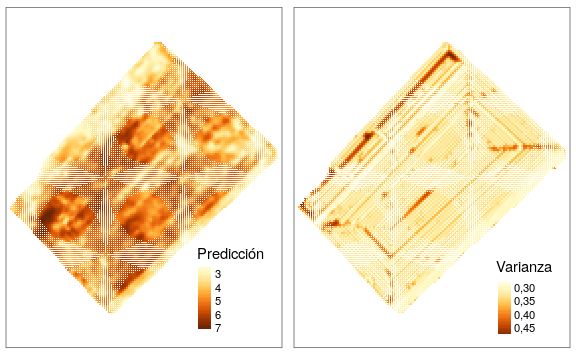
La siguiente línea de comando permite realizar la predicción kriging en bloques en un contexto local para lo cual solo se adiciona en la función krige() el argumento block. En este ejemplo se definió la dimensión del bloque de \(40 \times 40\) m. Posteriormente se realiza la visualización de forma similar al caso anterior.
kriging_b <-
krige(
Rinde ~ 1,
datos_3,
grid ,
nmin = 7,
nmax = 25,
model = modelos,
block = c(40, 40)
)
#> [using ordinary kriging]
predK_btm <- tm_shape(kriging_b) +
tm_dots("var1.pred", style = "cont",
title = "Predicción Bloque")
varK_btm <- tm_shape(kriging_b) +
tm_dots("var1.var", style = "cont",
title = "Varianza Bloque")
tmap_arrange(predK_btm, varK_btm)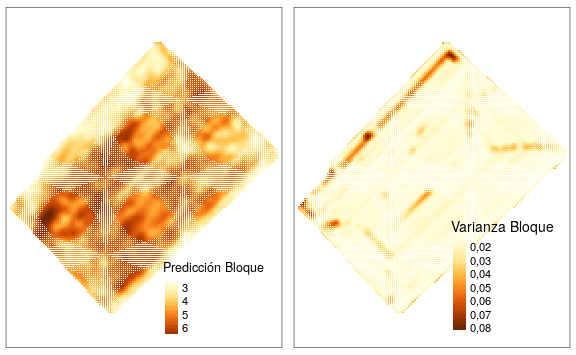
Las siguientes líneas de código muestran cómo obtener un data.frame conteniendo las predicciones realizadas sobre la grilla. En primer lugar, se extraen las coordenadas del objeto kriging_b y luego se transforma la clase del objeto a data.frame.
kriging_b$x <- st_coordinates(kriging_b)[, 1]
kriging_b$y <- st_coordinates(kriging_b)[, 2]
predRinde <-
data.frame(kriging_b)[, c("x", "y",
"var1.pred")]
names(predRinde)[3] <- paste("Tg")En el caso que exista una tendencia dada por las coordenadas, se utiliza kriging universal como método de interpolación espacial. Los comandos son similares a los anteriores, sólo debe cambiarse la fórmula. Por ejemplo, para una tendencia de primer grado en las coordenadas espaciales se escribiría Rinde~x+y. El modelo de semivariograma que se utiliza debe haberse ajustando contemplado el mismo tipo de tendencia. En situaciones donde otras covariables explican la tendencia en la media, éstas deben especificarse en la fórmula. Para poder hacer la interpolación es necesario que los valores de las covariables también estén disponibles en la grilla de predicción. En este último caso la interpolación se denomina kriging con deriva externa.
La interpolación también puede hacerse utilizando los parámetros partial sill, rango y nugget del semivariograma estimado con REML. Para el ajuste de un MLM con errores correlacionados espacialmente vía REML, la base de datos no debe ser muy grande. Para poder realizar el ajuste de un MLM en el conjunto de datos de ilustración, se tomó una muestra aleatoria de n=500 sobre la base de datos original de n=9009, usando la función sample(). Las siguientes líneas de código muestran el ajuste del semivariograma y obtención de los parámetros del mismo usando la función gls() del paquete nlme. Se realiza el ajuste de dos modelos lineales, el primero sin correlación espacial (null_model) y el segundo con una estructura de correlación espacial del tipo exponencial (esp_model).
set.seed(7)
datos_4 <- datos_3[
sample(1:nrow(datos_3),
500, replace = FALSE), ]
null_model <-
gls(Rinde ~ 1, datos_4,
method = "REML",
na.action = na.omit)
esp_model <- gls(
Rinde ~ 1,
data = datos_4,
correlation = corExp(
form = ~ x + y,
metric = "euclidean",
nugget = T
),
method = "REML",
na.action = na.omit
)A continuación, se realiza la comparación de ambos modelos mediante la prueba del cociente de verosimilitud. Los resultados muestran que hay diferencias significativas (p<0.005) entre ambos modelos, con lo cual se elige el modelo espacial. Los valores de AIC y BIC también mostraban un mejor ajuste de este último.
anova(null_model, esp_model)
#> Model df AIC BIC logLik Test L.Ratio p-value
#> null_model 1 2 1526 1535 -761
#> esp_model 2 4 1230 1247 -611 1 vs 2 300
<.0001Con el modelo ajustado se obtienen los parámetros del semivariograma y se construye el objeto m que contendrá estos para su posterior interpolación vía kriging.
summary(esp_model)
#> Generalized least squares fit by REML
#> Model: Rinde ~ 1
#> Data: datos_4
#> AIC BIC logLik
#> 1230 1247 -611
#>
#> Correlation Structure: Exponential spatial
correlation
#> Formula: ~x + y
#> Parameter estimate(s):
#> range nugget
#> 102,547 0,134
#>
#> Coefficients:
#> Value Std.Error t-value p-value
#> (Intercept) 4,22 0,234 18 0
#>
#> Standardized residuals:
#> Min Q1 Med Q3 Max
#> -1,848 -0,371 0,378 1,097 2,634
#>
#> Residual standard error: 1,18
#> Degrees of freedom: 500 total; 499 residual
esp_model$sigma
#> [1] 1,18
nugget <- 0.1344285 * esp_model$sigma ^ 2
psill <- esp_model$sigma ^ 2 - nugget
range <- 102.5470883
m <- vgm(psill, "Exp", range, nugget)
kriging_mlm <-
krige(
Rinde ~ 1,
datos_4,
grid ,
nmin = 7,
nmax = 25,
model = m
)
#> [using ordinary kriging]El mismo ajuste de semivariograma puede realizarse utilizando la función likfit() del paquete geoR. En este caso es necesario generar un objeto del tipo geodata. La función de ajuste solicita valores iniciales de sill parcial y rango y modelo teórico (para esta aplicación se usa el exponencial). En el caso del efecto nugget el mismo es estimado por defecto. Es posible también incorporar tendencias utilizando el argumento trend. Los resultados del modelo muestran valores estimados de los parámetros similares a los obtenidos con la función gls().
datos_geor <- as.data.frame(datos_4)
datos_geor <-
as.geodata(datos_geor,
coords.col = c("x", "y"),
data.col = "Rinde")
mlm_geor <-
likfit(
datos_geor,
ini = c(0.7, 90),
cov.model = "exponential",
lik.method = "REML",
messages = FALSE
)
summary(mlm_geor)
#> Summary of the parameter estimation
#> -----------------------------------
#> Estimation method: restricted maximum
likelihood
#>
#> Parameters of the mean component (trend):
#> beta
#> 4,22
#>
#> Parameters of the spatial component:
#> correlation function: exponential
#> (estimated) variance parameter sigmasq
(partial sill) = 1,2
#> (estimated) cor. fct. parameter phi (range
parameter) = 103
#> anisotropy parameters:
#> (fixed) anisotropy angle = 0 ( 0 degrees )
#> (fixed) anisotropy ratio = 1
#>
#> Parameter of the error component:
#> (estimated) nugget = 0,186
#>
#> Transformation parameter:
#> (fixed) Box-Cox parameter = 1 (no
transformation)
#>
#> Practical Range with cor=0.05 for asymptotic
range: 307
#>
#> Maximised Likelihood:
#> log.L n.params AIC BIC
#> "-608" "4" "1224" "1241"
#>
#> non spatial model:
#> log.L n.params AIC BIC
#> "-758" "2" "1520" "1528"
#>
#> Call:
#> likfit(geodata = datos_geor, ini.cov.pars =
c(0.7, 90), cov.model = "exponential",
#> lik.method = "REML", messages = FALSE)5.5.2 Validación cruzada
A continuación, se ilustra el proceso de validación cruzada k-fold. En este caso la función utilizada es krige.cv() del paquete gstat. Aquí como en el ajuste del semivariogram empírico y la interpolación, se tienen los argumentos fórmula (Rinde~1, lo cual especifica que es un proceso estacionario), la base de datos (datos_3) y el modelo de semivariograma teórico ajustado (modelos). Aquí también se realiza la validación usando kriging en un contexto local por lo que se colocan los argumentos nmin y nmax. El argumento nfold determina el número de grupos (k) en los que se divide la base de datos para realizar la validación cruzada k-fold. Para obtener repetibilidad en los resultados se sugiere fijar la semilla mediante la función set.seed().
Realizada la validación es posible calcular estadísticos resumen como el error medio (ME), error cuadrático medio (MSE), media del cociente de la desviación cuadrática (mean squared deviation ratio, MSDR), raíz del error cuadrático medio (RMSE), la RMSE relativa a la media de los observados (RMSE_rel) y la correlación lineal entre los observados vs. Predichos. Un gráfico de estos últimos se muestra al final.
ME <- mean(valcru$residual)
MSE <- mean(valcru$residual ^ 2)
MSDR <- mean(valcru$zscore ^ 2)
RMSE <- sqrt(mean(valcru$residual ^ 2))
RMSE_rel <-
sqrt(mean(valcru$residual ^ 2)) /
mean(valcru$observed) * 100
r <- cor(valcru$observed,
valcru$observed - valcru$residual)
tabla <- data.frame(ME, MSE, RMSE,
RMSE_rel, MSDR, r)
tabla
#> ME MSE RMSE RMSE_rel MSDR r
#> 1 -0,00018 0,228 0,478 10,3 0,665 0,899
plot(
valcru$observed,
valcru$observed - valcru$residual,
xlab = "Observados",
ylab = "Predichos"
)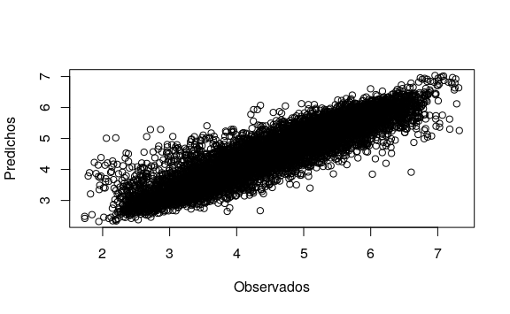
5.6 Caracterización de variabilidad espacial con múltiples capas de datos
5.6.1 Análisis de componentes principales
Para implementar el análisis multivariado es necesario contar con información de cada variable en los mismos sitios georreferenciados. En esta sección se usa la base de datos Pred2.txt que contiene mediciones de conductividad eléctrica aparente en dos profundidades 0-30 cm (CE30) y 0-90 cm (CE90), elevación (Elev), profundidad de suelo (Pe) y rendimiento de trigo (Tg). Para generar esta base debido a las diferentes resoluciones espaciales de las variables medidas, se calculó una zona buffer de 15 m de radio para la variable Pe y sobre cada punto buffer se calculó la mediana de las restantes variables. La matriz de datos resultante quedó conformada por n=482 sitios (filas) y p=7 variables (columnas).
Para realizar el Análisis de Componentes Principales espacial (MULTISPATI-PCA) se utiliza los paquetes ade4 y adespatial. Primero se necesita calcular la matriz de ponderación espacial en forma similar a la realizada para el cálculo del índice de Moran. Luego, se realiza un Análisis de Componentes Principales (PCA) clásico y posteriormente sobre las componentes generadas por PCA, se aplica el MULTISPATI-PCA.
Carga de base de datos multivariada.
pred <- read.table("datos/Pred2.txt",
header = TRUE)
head(pred)
#> x y Pe Elev CE30 CE90 Tg
#> 1 312283 5800205 80 161 21,8 30,6 4,19
#> 2 312257 5800229 40 161 30,3 17,9 4,00
#> [ reached 'max'
/ getOption("max.print") --
omitted 4 rows ]La función dudi.pca() del paquete ade4, permite realizar un PCA sobre objetos de clase data.frame. Sus argumentos indican, las variables con las que se realizará el PCA, un valor lógico (TRUE o FALSE) indicando si debe o no centrarse por la media (center) y normalizarse (scale), un valor lógico para la realización o no del gráfico (scannf) y la cantidad de ejes guardados (nf), que coincide con la cantidad de variables utilizadas en el análisis.
Para transformar un PCA en un PCA espacial (MULTISPATI-PCA) se calcula la red de vecindarios y la matriz de ponderación espacial. La distancia máxima para definir los sitios vecinos de cada dato fue de 45 m. Además, se adiciona el argumento zero.policy=T para poder generar la matriz de pesos espaciales contemplando que algunos puntos no tengan datos vecinos. La función multispati() permite realizar el MUlTISPATI-PCA. Para ello es necesario colocar en la función el objeto que surge de realizar el ACP (pca) y la matriz de pesos espaciales (pesos_sp). El argumento nfposi hace referencia al número de ejes con autocorrelación positiva que es retenido en el análisis. También pueden guardarse ejes con autocorrelación negativa mediante el argumento nfnega. En general los ejes con autocorrelación negativa son aquellos de menor contribución a la variabilidad total.
cord <- coordinates(pred[, 1:2])
vecindarios <- dnearneigh(cord, 0, 45)
pesos_sp <- nb2listw(vecindarios,
style = "W",
zero.policy = T)
pca_esp <-
adespatial::multispati(pca, pesos_sp,
scannf = F, nfposi = 5)Para realizar un gráfico que muestre las correlaciones entre las variables se puede usar la función s.arrow(). En este gráfico de traza un vector para cada variable en el espacio definido por las componentes principales que se seleccionen. En este caso de estudio, la función utiliza la primera componente para graficar el eje horizontal y la segunda componente para el eje vertical. Para adicionar un gráfico de barras con los autovalores puede usarse el argumento add.scatter.eig().
s.arrow(pca_esp$c1,
xax = 1,
yax = 2,
clabel = 1)
add.scatter.eig(
pca_esp$eig,
xax = 1,
yax = 2,
posi = "bottomright",
ratio = 0.2
)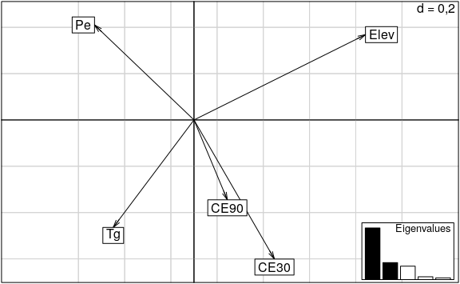
El gráfico obtenido del MULTISPATI-PCA muestra que las variables Elev y Pe son las más importantes en la explicación de la variabilidad espacial a nivel del primer eje (sPC1, eje horizontal). Mientras que la CE30 y Tg presentan mayor importancia en la SPC2. Además, se observa una correlación positiva entre CE30 y CE90, y negativa entre estas dos y la Pe. También la Elev y Tg se correlacionan en forma negativa. El gráfico de autovalores (barras) sugiere dos estructuras principales a nivel de sPC1 y sPC2, siempre la sPC1 explica la mayor parte de la variabilidad de los datos seguida por sPC2, sPC3, y así sucesivamente.
summary(pca_esp)
#>
#> Multivariate Spatial Analysis
#> Call: adespatial::multispati(dudi = pca,
listw = pesos_sp, scannf = F,
#> nfposi = 5)
#>
#> Scores from the initial duality diagram:
#> var cum ratio moran
#> RS1 1,936 1,94 0,387 0,676
#> RS2 1,078 3,01 0,603 0,405
#> RS3 0,878 3,89 0,778 0,250
#> RS4 0,628 4,52 0,904 0,552
#> [ reached 'max'
/ getOption("max.print") --
omitted 1 rows ]
#>
#> Multispati eigenvalues decomposition:
#> eig var moran
#> CS1 1,4254 1,808 0,7884
#> CS2 0,4684 1,095 0,4277
#> CS3 0,3712 0,748 0,4963
#> CS4 0,0790 0,689 0,1147
#> CS5 0,0484 0,660 0,0734Como se establece en la literatura, MULTISPATI-PCA maximiza el producto entre la varianza espacial y la autocorrelación mientras que PCA maximiza la varianza total. Los resultados muestran que con MULTISPATIPCA se explica una menor proporción de la varianza acumulada en el primer eje, respecto de PCA (1,81 vs. 1,94). Las dos primeras CP del PCA explican 60% de la variabilidad total mientras que la CS1 y CS2 del MULTISPATI el 58%. No obstante, los valores del índice de Moran calculados para las tres primeras CPs sugieren que la estimación de autocorrelación aumentó cuando se usó MULTISPATIPCA respecto de la contenida en las CPs del PCA (0,79 vs. 0,68 para el eje 1, 0,43 vs. 0,40 para el eje 2, 0,50 vs. 0,25 para el eje 3). Este resultado permitiría una visualización mejor de la variabilidad espacial. Por el contrario, a nivel de las CPs 4 y 5 este comportamiento fue inverso.
5.6.2 Análisis de conglomerados
Para implementar este análisis también es necesario contar con información de cada variable en los mismos sitios georreferenciados. Otra forma de lograr esto es interpolar cada una de ellas con la misma grilla de predicción. Es decir, que cada punto de la grilla tendrá un dato para cada variable predicha. Para el siguiente caso de estudio se realizó el procedimiento de interpolación con mediciones de conductividad eléctrica aparente en dos profundidades 0-30 cm (CE30) y 0-90 cm (CE90), elevación (Elev), profundidad de suelo (Pe) y rendimiento de trigo (Tg) (archivo Pred.txt). Para cada variable se realizó un análisis exploratorio y la predicción espacial para el re-escalado usando una grilla común a todas ellas de \(10 \times 10\) m. Una vez que se realiza el re-escalado de cada variable, se tiene un objeto para cada variable con igual número de filas y columnas que pueden unirse en un único objeto usando la función cbind(). Para predRinde se extraen las 3 primeras columnas correspondiente a las coordenadas y valores predichos, mientras que para las restantes sólo se extraen los valores predichos de cada variable (columna 3) considerando que, si se utilizó la misma grilla de predicción, las coordenadas de cada data.frame deberían ser las mismas. Se recomienda mantener clara la nomenclatura de cada variable, teniendo en cuenta que el software es case-sensitive (sensible a mayúsculas y minúsculas). A tal efecto, se renombraron las columnas. A continuación, se muestras los códigos de R para hacer el procedimiento de concatenación, pero para la ejemplificación se carga y utiliza una base de datos que previamente fue concatenada.
Posteriormente, se implementará el análisis de clúster espacial KM-sPC (Córdoba et al. 2013). Para ello primero se realiza un análisis de componentes principales espaciales (MULTISPATI-PCA) sobre las variables originales. Luego las variables sintéticas (componentes principales espaciales, sPC) son utilizadas como input del análisis de cluster fuzzy k-means.
pca <-
dudi.pca(
pred[, 3:7],
center = TRUE,
scale = TRUE,
scannf = FALSE,
nf = 5
)
cord <- coordinates(pred[, 1:2])
vecindarios <- dnearneigh(cord, 0, 10)
pesos_sp <- nb2listw(vecindarios,
style = "W",
zero.policy = T)
pca_esp <-
adespatial::multispati(pca, pesos_sp,
scannf = F, nfposi = 5)La función multispati() almacena las sPC en la posición li dentro de los objetos creados. La siguiente sentencia crea un nuevo objeto con la unión de las columnas con las coordenadas y las sPC.
cs <- pca_esp$li[, 1:5]
pred_am <- cbind(pred[, c("x", "y")], cs)
head(pred_am)
#> x y CS1 CS2 CS3 CS4 CS5
#> 1 312433 5800234 1,92 0,543 -0,118 -0,321
0,0257
#> 2 312423 5800244 1,93 0,448 -0,215 -0,256
0,1732
#> [ reached 'max'
/ getOption("max.print") --
omitted 4 rows ]Para realizar el análisis de cluster fuzzy k-means se utiliza la función cmeans() del paquete e1071 (Meyer et al. 2019). Para ello se necesita determinar las sPC que se utilizarán como input. En este caso se seleccionaron las columnas que corresponden a la sPC1, sPC2 y sPC3, de esta forma una gran cantidad de la variabilidad total es contemplada (\(\ge 70 \%\)) en el análisis. En este ejemplo se utilizaron 2, 3 y 4 clústers. Otras opciones de configuración son el número de iteraciones=100; método=cmeans (opción para usar el algoritmo fuzzy) y exponente difuso m=1.3.
clases2 <- cmeans(pred_am[, 3:5], 2,
100, method = "cmeans",
m = 1.3)
clases3 <- cmeans(pred_am[, 3:5], 3,
100, method = "cmeans",
m = 1.3)
clases4 <- cmeans(pred_am[, 3:5], 4,
100, method = "cmeans",
m = 1.3)En el ejemplo de ilustración se debe seleccionar entre dos, tres y cuatro clases. Para ello se utilizaron los siguientes índices: Xie-Beni, coeficiente de partición, entropía de clasificación y Fukuyama-Sugeno. Estos índices serán calculados para 2, 3 y 4 clases o clúster, utilizando la función fclustIndex(). En todos los índices, excepto el coeficiente de partición, el número de clases óptimo se obtiene cuando los índices tienen el menor valor. Para hacer que la interpretación del coeficiente de partición sea igual a los otros índices, se utiliza el valor inverso del índice. Luego se confeccionó una tabla con los índices obtenidos.
indices <- c(
"xie.beni",
"fukuyama.sugeno",
"partition.coefficient",
"partition.entropy",
"proportion.exponent"
)
ind_2clases <-
fclustIndex(clases2,
pred_am[, 3:5],
index = indices)
ind_3clases <-
fclustIndex(clases3,
pred_am[, 3:5],
index = indices)
ind_4clases <-
fclustIndex(clases4,
pred_am[, 3:5],
index = indices)
indices <- cbind(ind_2clases,
ind_3clases,
ind_4clases)
indices
#> ind_2clases ind_3clases ind_4clases
#> xb 4,83e-05 9,37e-05 1,09e-04
#> fs -1,20e+04 -1,32e+04 -1,44e+04
#> pc 9,26e-01 8,63e-01 8,34e-01
#> pe 1,26e-01 2,43e-01 3,02e-01
#> pre Inf Inf InfEn este ejemplo la mayoría de los índices, excepto Fukuyama-Sugeno, muestran que el número de clases a seleccionar es dos. Puede suceder que ninguno de los índices coincida con otro en el número óptimo de clases. Para facilitar la toma de decisiones se recomienda calcular un índice resumen para cada clasificación. Este nuevo índice puede ser la distancia Euclídea de los valores de los índices previamente normalizados por su valor máximo a través de las diferentes clasificaciones.
XieBeniN <- indices[1,] / max(indices[1,])
FukSugN <- indices[2,] / max(indices[2,])
CoefPartN <- indices[3,] / max(indices[3,])
EntrPartN <- indices[4,] / max(indices[4,])
indicesN <-
data.frame(rbind(XieBeniN, FukSugN,
CoefPartN, EntrPartN))
indicesN <- (indicesN) ^ 2
indices2N <- sqrt(sum(indicesN[, 1]))
indices3N <- sqrt(sum(indicesN[, 2]))
indices4N <- sqrt(sum(indicesN[, 3]))
indices2N
#> [1] 1,54
indices3N
#> [1] 1,86
indices4N
#> [1] 2,06El índice resumen se optimiza para la estructura conformada por dos clúster. Para realizar mapas de la clasificación, primero se debe extraer los datos de las clases delimitadas con el algoritmo fuzzy k-means y combinar con la base de datos inicial en la cual sólo se dejan las coordenadas. Posteriormente se transforma la base (base_am) a un objeto de clase sf y luego se grafican con el paquete tmap.
base_am <-
cbind(
pred_am[, 1:2],
"2clases" = clases2$cluster,
"3clases" = clases3$cluster,
"4clases" = clases4$cluster
)
head(base_am)
#> x y 2clases 3clases 4clases
#> 1 312433 5800234 1 1 1
#> 2 312423 5800244 1 1 1
#> 3 312433 5800244 1 1 1
#> [ reached 'max'
/ getOption("max.print") --
omitted 3 rows ]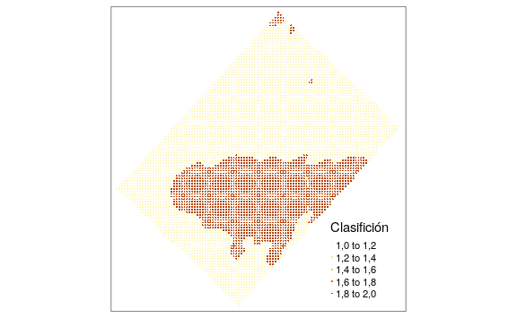
5.7 Predicción con múltiples capas de datos
En esta sección también se usa la base de datos Pred2.txt que contiene mediciones de conductividad eléctrica aparente en dos profundidades 0-30 cm (CE30) y 0-90 cm (CE90), elevación (Elev), profundidad de suelo (Pe) y rendimiento de trigo (Tg). La matriz de datos está conformada por n=482 sitios (filas) y p=7 variables (columnas).
Adicionalmente, para realizar la interpolación utilizando información de las covariables es necesario que la grilla de predicción contenga los valores de las coordenadas y de las covariables. El archivo grilla_am.txt contiene estos datos. A continuación, se cargan ambas bases de datos y transforma a objetos de clase sf.
pred <- read.table("datos/Pred2.txt",
header = TRUE)
pred <- st_as_sf(pred, coords = c("x", "y"),
crs = 32721)
head(pred)
#> Simple feature collection with 6 features
and 5 fields
#> geometry type: POINT
#> dimension: XY
#> bbox: xmin: 312000 ymin: 5800000 xmax:
312000 ymax: 5800000
#> epsg (SRID): 32721
#> proj4string:
+ proj=utm
+ zone=21
+ south
+datum=WGS84 +units=m +no_defs
#> First 3 features:
#> Pe Elev CE30 CE90 Tg geometry
#> 1 80 161 21,8 30,6 4,19 POINT (312283
5800205)
#> 2 40 161 30,3 17,9 4,00 POINT (312257
5800229)
#> [ reached 'max'
/ getOption("max.print") --
omitted 1 rows ]
grilla <- read.table("datos/grilla_am.txt",
header = TRUE)
grilla <- st_as_sf(pred, coords = c("x", "y"),
crs = 32721)5.7.1 Kriging con deriva externa
En las siguientes líneas de se realiza el ajuste del semivariograma empírico contemplando una tendencia dada por las covariables CE30, CE90, Elev y Pe y se realiza el ajuste de semivariogramas teóricos. Finalmente, se grafican ambos semivariogramas. Los resultados muestran que el modelo de mejor ajuste fue el exponencial. Los parámetros obtenidos fueron nugget (\(C_0=0.16\)), sill parcial (\(C=0.55\)) y rango (80 m). Nota: bajo la columna “psill”, para la fila Nugget, se debe leer el valor \(C_0\).
semiv_ked <- variogram(
Tg ~ CE30 + CE90 + Elev + Pe, pred
)
v.fit_vut_ked <-
fit.variogram(semiv_ked ,
vgm(c("Exp", "Sph", "Gau")))
v.fit_vut_ked
#> model psill range
#> 1 Nug 0,163 0,0
#> 2 Exp 0,549 80,7
plot(semiv_ked , v.fit_vut_ked)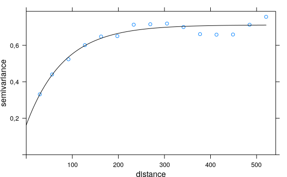
Para realizar la interpolación espacial se utiliza también la función krige() y se especifica la tendencia con las covariables en la fórmula. En este caso la predicción se realiza también en un contexto local (argumentos nmin y nmax).
kriging_ed <- krige(
Tg ~ CE30 + CE90 + Elev + Pe,
pred,
grilla,
model = v.fit_vut_ked,
nmin = 7,
nmax = 25
)
#> [using universal kriging]
prediccionKED <-
tm_shape(kriging_ed) +
tm_dots("var1.pred", style = "cont",
title = "Predicción KED")
prediccionKED <-
tm_shape(kriging_o) +
tm_dots("var1.var", style = "cont",
title = "Varianza KED")
tmap_arrange(prediccionKED, prediccionKED)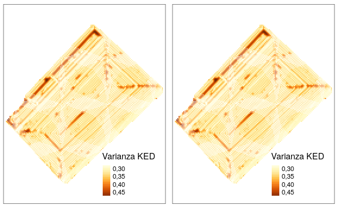
5.7.2 Kriging desde modelo de regresión
Para realizar la interpolación por el método kriging regresión primero se ajusta un modelo lineal de regresión entre la variable Tg y las covariables CE30, CE90, Elev y Pe.
A partir del modelo ajustado se obtienen los residuos que son incorporados al objeto pred. Luego sobre estos residuos se modela el semivariograma empírico y teórico. Los resultados muestran que los valores estimados de los parámetros del semivariograma son similares a los obtenidos en el caso anterior. Esto es esperable ya que ambas aproximaciones son equivalentes.
pred$residuos <- mlr$residuals
names(pred)
#> [1] "Pe" "Elev" "CE30" "CE90" "Tg"
"geometry" "residuos"semiv_rk <- variogram(residuos ~ 1 , pred)
v.fit_vut_rk <-
fit.variogram(semiv_rk ,
vgm(c("Exp", "Sph", "Gau")))
v.fit_vut_rk
#> model psill range
#> 1 Nug 0,163 0,0
#> 2 Exp 0,549 80,7
Finalmente se realiza la predicción en la grilla de los residuos y esta es sumada a la predicción del modelo de regresión ajustado inicialmente para obtener los valores predichos finales.
kgres <- krige(residuos ~ 1, pred,
grilla, model = v.fit_vut_rk)
#> [using ordinary kriging]
grilla$RK_pred <-
predict(mlr, newdata = grilla) +
kgres$var1.pred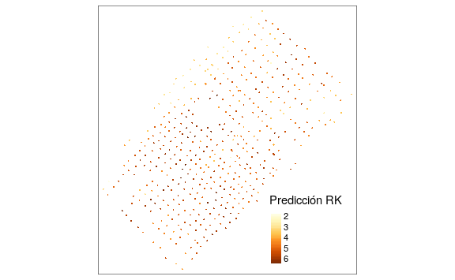
5.7.3 Árboles aleatorios
Para este método primero se ajusta el algoritmo random forest utilizando para ello el paquete caret. Para ello se optimizará el parámetro mtry mediante un proceso de validación cruzada. Los valores prbados de mtry se especifican en el objeto que lleva el mismo nombre. Con la función fitControl() se estable el tipo de validación cruzada, en este caso k-fold con k=10. Además, se permite el paralelizado del proceso en caso de ser necesario (allowParallel=T).
mtry <- expand.grid(mtry = seq(1, 4, 1))
fitControl <- trainControl(method = "cv",
number = 10,
allowParallel = T)Las siguientes son las opciones de paralelizado que involucra los paquetes parallel y doParallel
library(parallel)
library(doParallel)
cluster <- makeCluster(max(1, detectCores() - 1))
registerDoParallel(cluster)El ajuste del random forest se realiza con la función train() la cual requiere entre otros especifica la fórmula o modelo, la base de datos a utilizar, el algoritmo (rf, random forest), grilla de valores de hiperparámetros a evaluar (objeto mtry) y opciones de la validación.
set.seed(7)
train_rf <- train(
Tg ~ CE30 + CE90 + Elev + Pe,
data = pred,
method = "rf",
tuneGrid = mtry,
trControl = fitControl
)Luego de ajustar el modelo de RF se procede a obtener los residuos y el ajuste de los semivariogramas.
pred$residuosRF <-
pred$Tg - predict(train_rf, newdata = pred)
semiv_RFk <- variogram(residuosRF ~ 1 , pred)
plot(semiv_RFk)
v.fit_vut_RFk <-
fit.variogram(semiv_RFk ,
vgm(c("Exp", "Sph", "Gau")))
plot(semiv_RFk , v.fit_vut_RFk)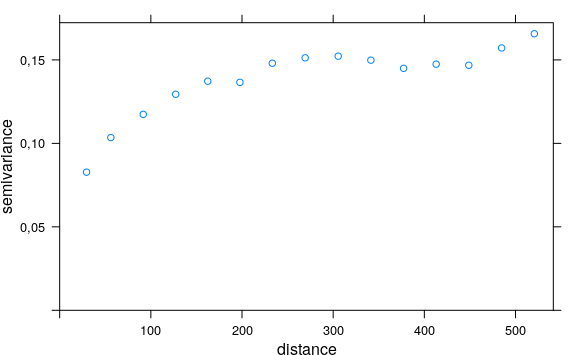
Finalmente se realiza la predicción de los residuos sobre la grilla y se suman a la predicción del modelo de random forest ajustado inicialmente.
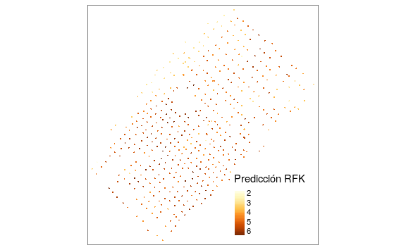
Referencias
Córdoba, Mariano, Cecilia Bruno, José Luis Costa, and Mónica Balzarini. 2013. “Subfield management class delineation using cluster analysis from spatial principal components of soil variables.” Computers and Electronics in Agriculture 97 (September). Elsevier: 6–14. https://doi.org/10.1016/j.compag.2013.05.009.
Meyer, David, Evgenia Dimitriadou, Kurt Hornik, Andreas Weingessel, and Friedrich Leisch. 2019. E1071: Misc Functions of the Department of Statistics, Probability Theory Group (Formerly: E1071), Tu Wien. https://CRAN.R-project.org/package=e1071.